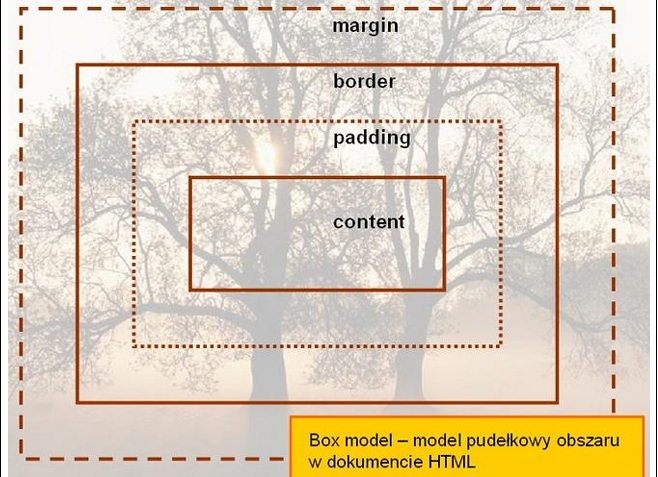
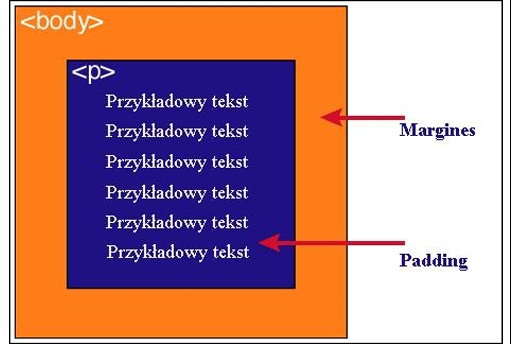

Każdy element w dokumencie HTML, otacza się prostokątnym obszarem zwanym pudełkiem (ang. Box model). Pudełko składa się z kilku warstw.
| Zawartość | Opis |
| Content | zawartość elementu (np.: tekst, obrazek) |
| Padding | otaczające marginesy wewnętrzne, odstęp między obramowaniem i zawartością elementu |
| Border | obramowania wokół zawartości elementu, ma styl i kolor. |
| Margin | marginesy wokół ramki (margines zewnętrzny). Jest to pusty obszar wokół ramki, który nie ma koloru tła i jest przeźroczysty. |
Padding, border i margin mogą mieć zerową wartość.
Tło elementu jest określone dla wszystkich z podanych powyżej obszarów z wyjątkiem marginesów zewnętrznych, które zawsze są przezroczyste (transparent).

Padding określa przestrzeń wokół danego elementu, np: >p> lub >div>, natomiast margines przestrzeń pomiędzy elementami.

Jak widać na rysunku, padding oznaczony jest kolorem niebieskim. Określa on wielkość przestrzeni wokół elementu >p>. Element ten posiada również margines zaznaczony kolorem pomarańczowym. Jest to odległość od brzegu elementu >body>.>/p>